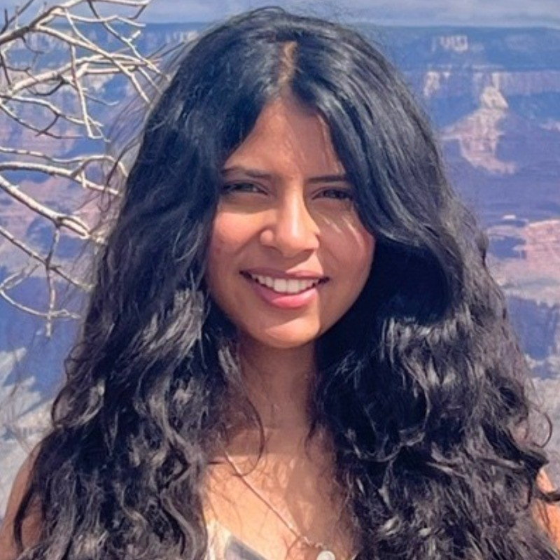

CRISPRi-Linked Multi-Module Feedback Loops
Integrating dCas9 into the E. coli genome to implement CRISPR interference across two gene modules — mitigating winner-take-all resource competition and improving synthetic circuit predictability.
Read More
I'm a PhD candidate in Biological Design at Arizona State University, where I work on synthetic gene circuits, CRISPR interference, and biomolecular condensates. Outside the lab, I help run Nucleate Arizona and enjoy mentoring early-career scientists.
Integrating dCas9 into the E. coli genome to implement CRISPR interference across two gene modules — mitigating winner-take-all resource competition and improving synthetic circuit predictability.
Read MoreEngineering biomolecular condensates as a strategy to stabilize synthetic gene circuits under growth feedback. Published in Cell (2025).
Read MoreA phylogenetic study of the DNA repair protein Ku across eukaryotes and prokaryotes, using sequence data from NCBI and OrthoDB. Published in PLOS ONE (2025).
Read More